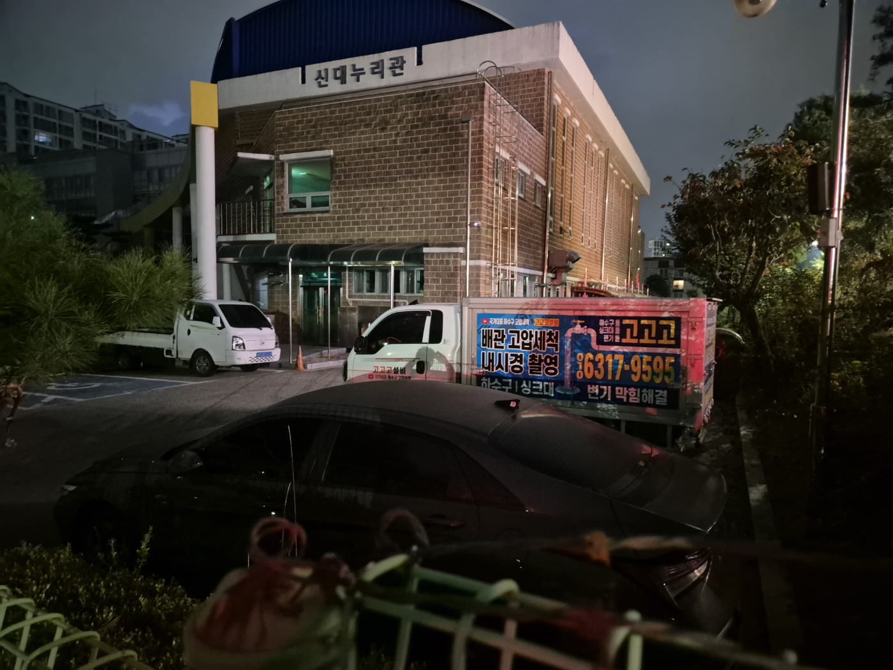
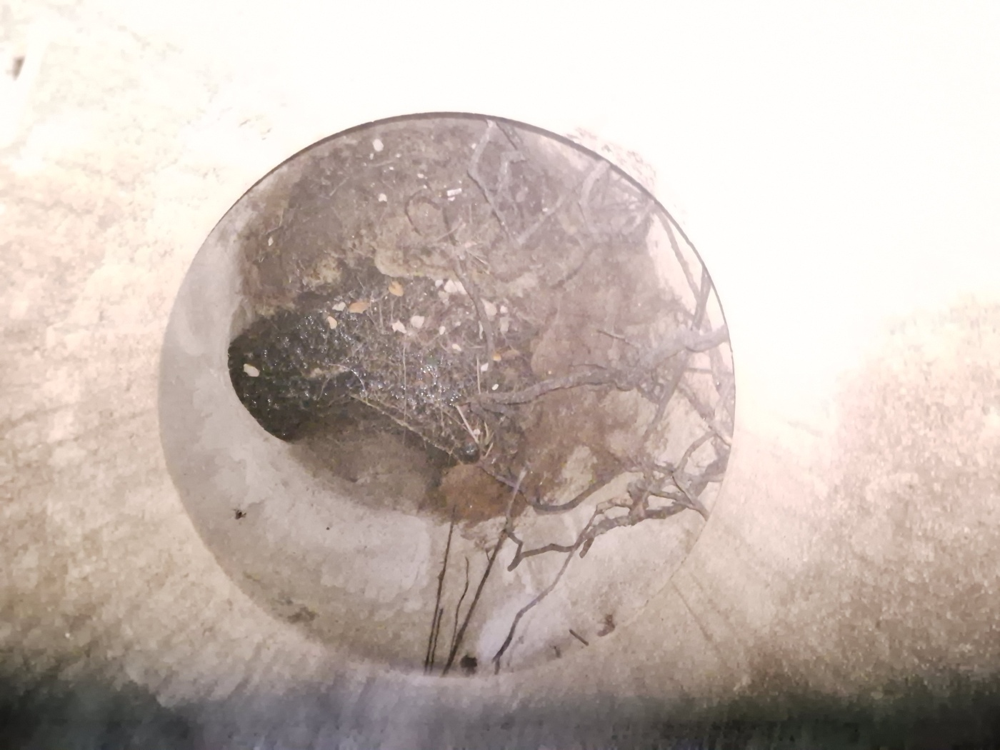
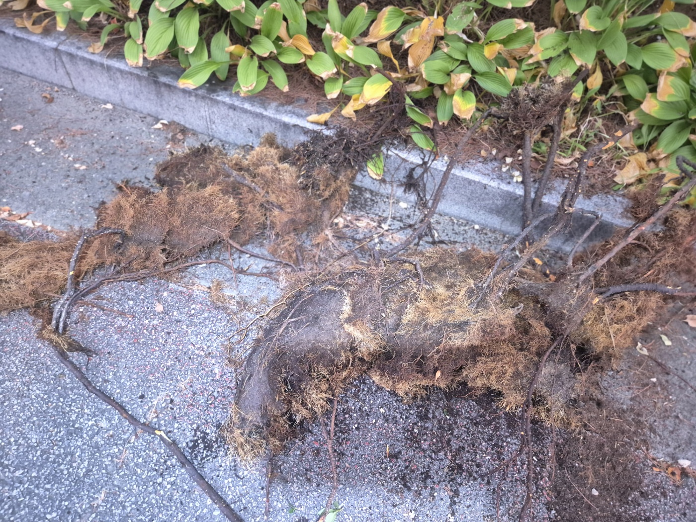
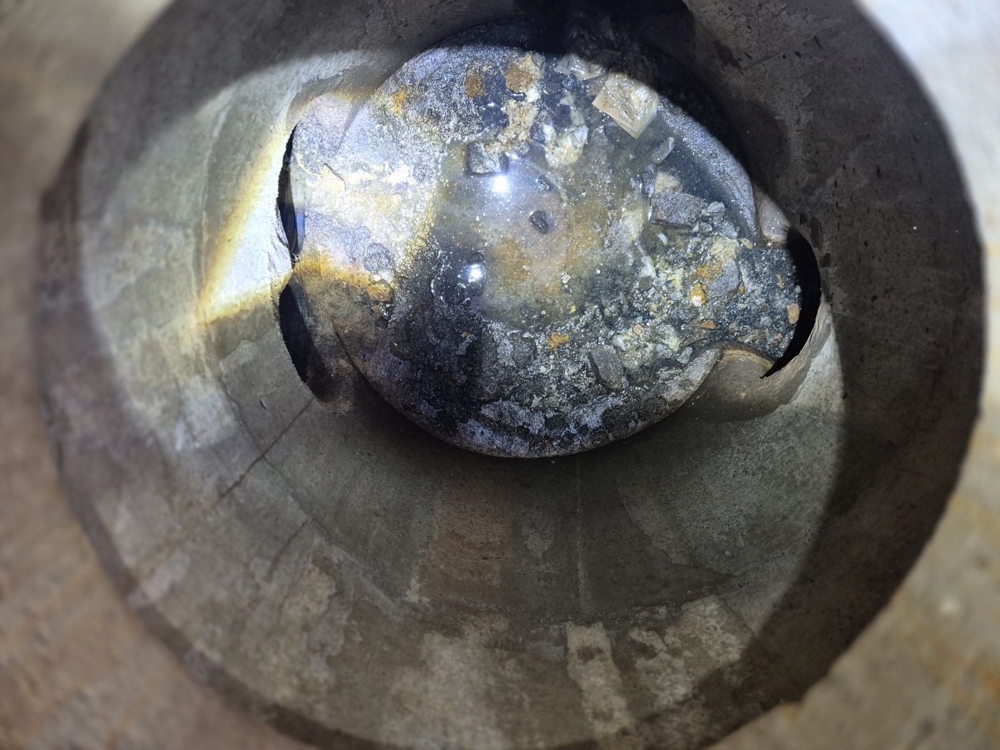
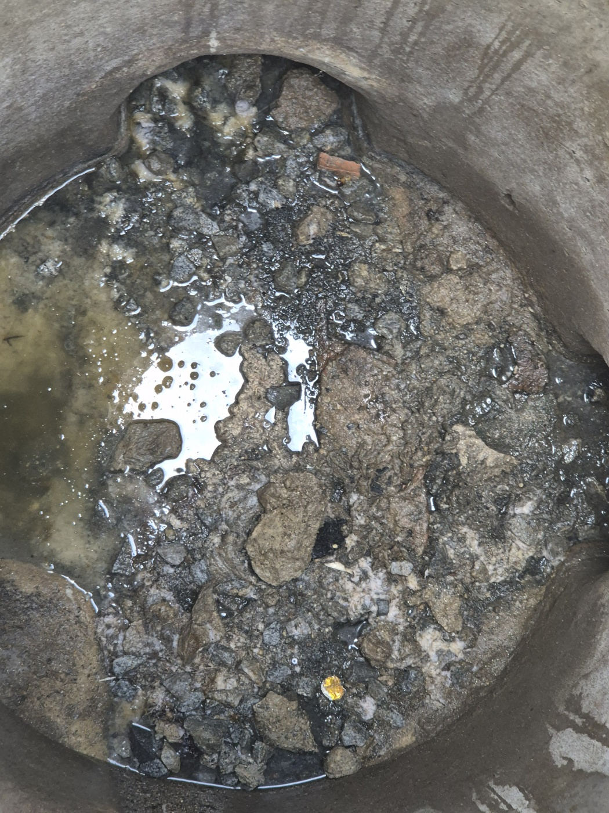
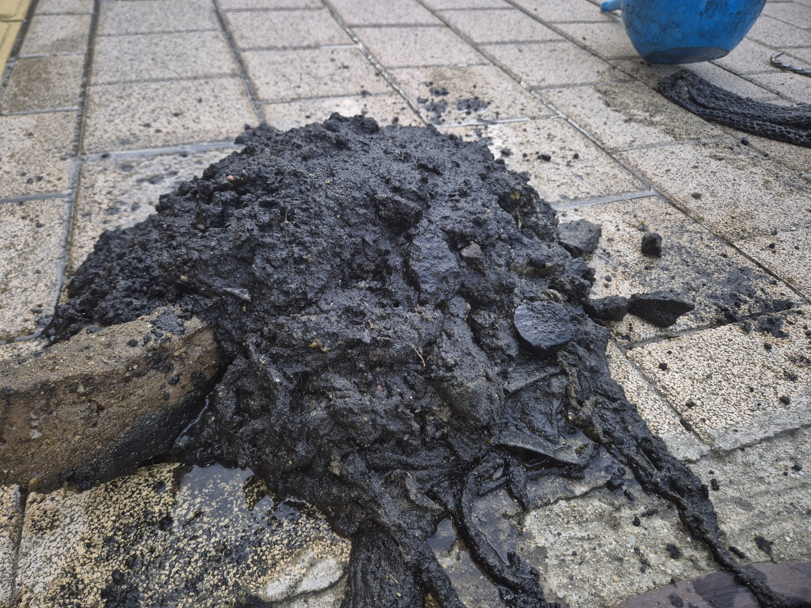
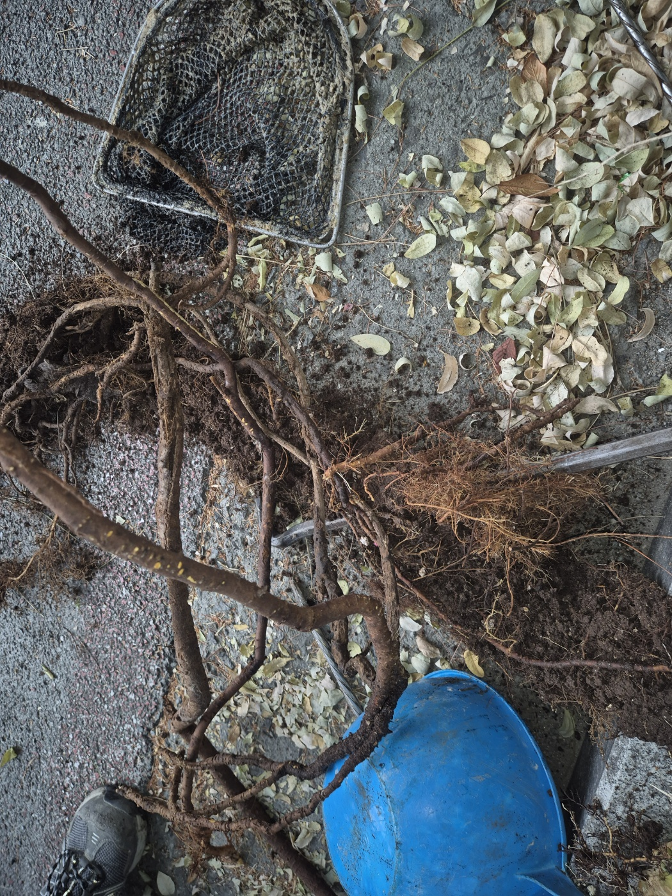
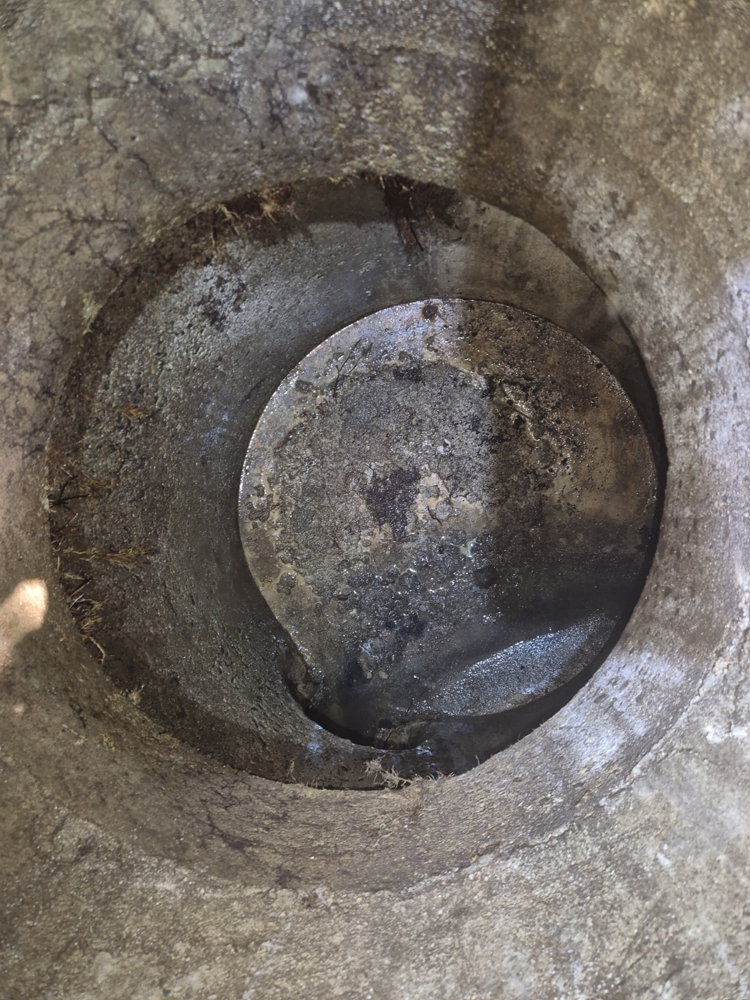

안녕하세요.. 고고고 설비입니다.. 오늘은 천안시 두정동에 있는 초등학교 부속건물에서 하수구막힘 신고를 받고 야간에 다녀온 현장입니다. 아이들이 없는 시간에 맞춰 작업해달라고 하셔서 해 진 뒤에 출동했어요.
건물 앞 맨홀을 열어보니 안쪽에 가느다란 뿌리 같은 게 잔뜩 엉켜있는 게 보였습니다. 화단 쪽 나무뿌리가 배관 틈으로 파고든 것으로 보였어요.

화단 보도블록 틈을 따라 뿌리를 뽑아보니, 생각보다 훨씬 길고 굵은 뿌리 다발이 통째로 딸려 나왔습니다. 배관 이음부가 뿌리에 뚫려 조금씩 벌어진 상태였어요.

배관 안쪽을 들여다보니 돌덩이 하나가 관 입구에 끼어서 물길을 절반 넘게 막고 있었습니다. 뿌리와 돌이 함께 자리를 잡아서 막힘이 생긴 것으로 보였어요.


고압 호스로 맨홀과 배관 안쪽을 반복해서 세척하며 돌과 뿌리, 굳은 찌꺼기를 하나씩 제거했습니다.
작업을 마치고 나니 시커멓게 눌어붙은 찌꺼기 덩어리와 뽑아낸 나무뿌리 뭉치가 한자리에 수북하게 쌓였습니다.


작업을 마치고 맨홀 안쪽을 다시 확인해보니, 돌과 뿌리로 막혀있던 입구가 깨끗하게 뚫려있는 게 보였습니다. 물을 내려서 정상적으로 배수되는 것까지 최종 확인했어요.

화단이나 가로수 가까이 있는 배관은 나무뿌리가 이음부 틈을 파고드는 경우가 종종 있습니다. 배수가 느려지는 신호가 있다면 뿌리 침투를 의심해보시고 미리 점검받으시는 걸 권해드립니다.
고고고 설비는 주택, 아파트, 원룸, 상가, 공장의 생활 하수 오수 배관을 관리해 주는 업체입니다. 고고고 설비에 전화 주시면 친절상담 정확한 진단 확실한 해결로 보답해 드리겠습니다!!